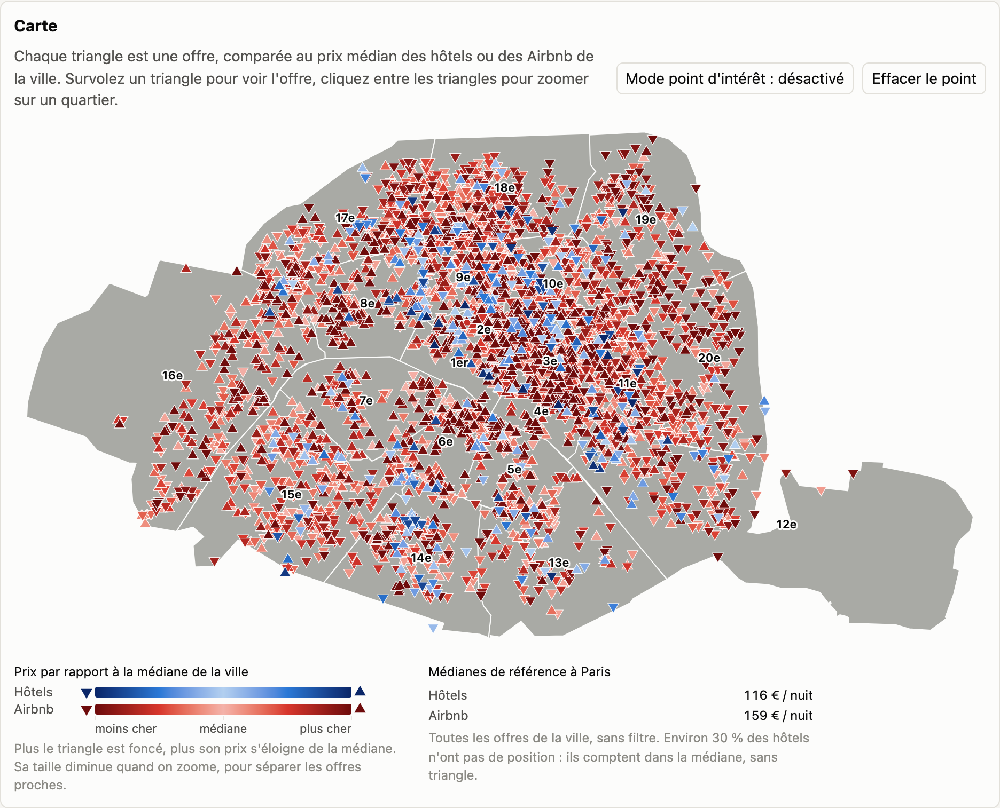
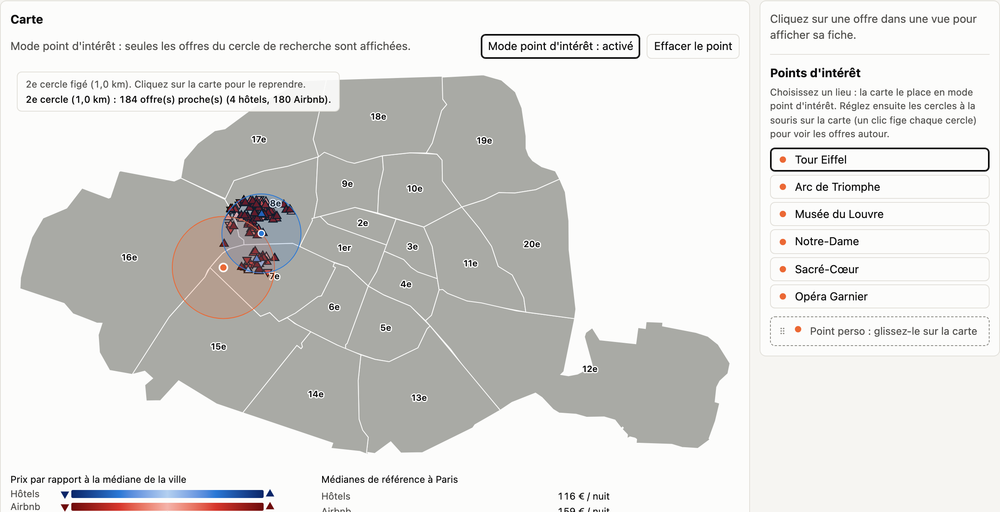
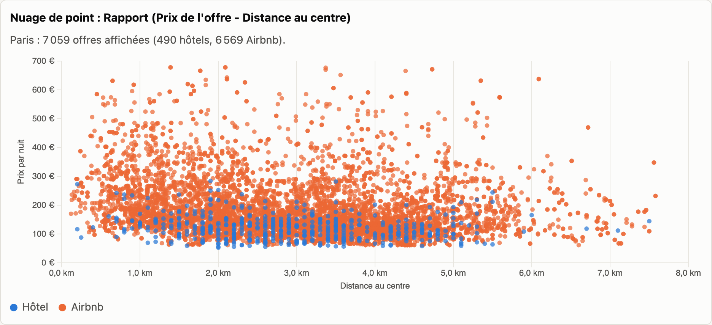

Description du projet
Pour un voyageur avec un budget donné, vaut-il mieux réserver un hôtel ou un Airbnb, et dans quel secteur de la ville ?
Pour un court séjour en ville, on hésite souvent entre un hôtel et un Airbnb. Les sites de réservation les présentent séparément, ce qui empêche de les comparer.
Notre projet les réunit dans une même visualisation interactive, pour Londres, Berlin, Paris et Rome. Il s'adresse à un voyageur non expert qui part à deux avec un budget par nuit en tête. Il compare les deux offres sur le prix par nuit, la note, la distance au centre et l'accès au métro, quartier par quartier.
Les données viennent de deux datasets Kaggle sous licence CC0 : 28 192 annonces Airbnb et 1 705 hôtels Booking. Nous les avons unifiées en une seule table de 29 315 offres : prix en euros par nuit, notes sur 100, distances mesurées depuis un même centre et quartier officiel pour chaque offre. Les hôtels, sans coordonnées au départ, ont été géolocalisés à 69 %.
L'application, écrite en D3.js, relie trois techniques par un état partagé :
- une carte des offres, où chaque triangle indique si l'offre est plus ou moins chère que la médiane de sa source ;
- des points d'intérêt sur cette carte, pour ne garder que les offres autour d'un lieu ;
- un nuage de points qui croise la distance au centre et le prix.
Une offre survolée ou cliquée dans une vue est surlignée dans l'autre. Des filtres communs, le changement de ville et une fiche détaillée complètent la vue d'ensemble. La problématique reste descriptive : montrer où et comment les deux offres diffèrent, sans chercher à l'expliquer.
Luca VIZIO et Samuel BOIX-SEGURA, Master MIAGE MBDS, Université Côte d'Azur.
Utilisateurs visés et tâches
Utilisateur visé
Un voyageur non expert qui prépare un séjour de 2 à 4 nuits à deux, avant de réserver. Il a un budget par nuit en tête, par exemple 150 €. Il lit une carte et un graphique simple, sans être statisticien.
Ses questions : hôtel ou Airbnb ? Dans quel secteur ? Que perd-il en s'éloignant du centre pour payer moins ?
Tâches
Les tâches sont dans ses mots, classées selon Shneiderman (Sh) et Keller et Keller (KK).
| Tâche | Classement | Données | Où |
|---|---|---|---|
| T1. « Ici, un hôtel coûte-t-il plus cher qu'un Airbnb ? » | Sh vue d'ensemble ; KK comparer | prix_nuit_eur, source |
nuage |
| T2. « Les prix baissent-ils loin du centre ? » | KK corréler | dist_centre_km, prix_nuit_eur |
nuage |
| T3. « Dans quels quartiers est-ce moins cher que d'habitude ? » | Sh zoom ; KK localiser | lat, lon, quartier |
carte |
| T4. « Seulement mon budget, une bonne note, près d'un métro. » | Sh filtrer | prix_nuit_eur, note_100, type, etoiles, metro_proche |
filtres communs |
| T5. « Que trouve-t-on près de la tour Eiffel ? » | KK localiser ; Sh filtrer | lat, lon |
points d'intérêt |
| T6. « Que vaut exactement cette offre ? » | Sh détails à la demande ; KK identifier | toutes les colonnes | infobulle, fiche |
| T7. « Dans quelle ville mon budget va-t-il le plus loin ? » | KK comparer ; changement de dataset | ville |
sélecteur de ville |
| T8. « Un Airbnb est-il plus cher le week-end ? » | KK comparer | periode |
filtre de période |
Les tâches suivent le mantra de Shneiderman : vue d'ensemble (T1, T2, T7), zoom et filtre (T3, T4, T5, T8), puis détails (T6).
Limites des données
- Les hôtels de Rome sont 2 à 5 fois plus chers qu'ailleurs : prix non comparables aux Airbnb.
- Les notes Airbnb et Booking n'ont pas le même barème : on les compare au sein d'une source.
- 69 % des hôtels seulement ont une position sur la carte.
Workflow des données
Les données suivent le modèle du cours : données brutes, transformation, table commune, puis visualisation. Toute la chaîne se rejoue avec ./scripts/build_data.sh.
flowchart LR
A["Kaggle Airbnb<br/>51 707 annonces"] --> N1["01 Airbnb<br/>28 192"]
B["Kaggle hôtels"] --> N2["02 Booking<br/>1 705"]
B --> N4["04 géocodage<br/>1 183 positions"]
C["Contours officiels"] --> N3["03 quartiers<br/>80 zones"]
N1 --> N5["05 table commune<br/>29 315 offres"]
N2 --> N5
N3 --> N5
N4 --> N5
N5 --> V["Application D3"]
| Script | Ce qu'il fait | Sortie |
|---|---|---|
scripts/download_data.sh |
Télécharge les deux datasets Kaggle par l'API publique. | data/raw/ |
scripts/download_geo.sh |
Télécharge les contours des quartiers des quatre villes. | data/raw/geo/ |
notebooks/01_airbnb.ipynb |
Garde les 4 villes communes, calcule le prix par nuit (realSum / 2) et recalcule la distance depuis le centre de Booking. |
28 192 annonces |
notebooks/02_hotels_booking.ipynb |
Aplatit le JSON, retire 3 doublons, convertit les dollars en euros, ramène la note sur 100 et signale Rome. | 1 705 hôtels |
notebooks/03_quartiers.ipynb |
Met les contours au même format et relie chaque nom de quartier Booking à un contour officiel. | 80 quartiers |
notebooks/04_geocodage_hotels.ipynb |
Retrouve la position des hôtels dans OpenStreetMap et ne garde que celles qui passent trois contrôles. | 1 183 positions |
notebooks/05_table_commune.ipynb |
Fusionne les deux sources, rattache chaque offre à un quartier, retire 582 prix aberrants et valide le schéma. | offres.csv : 29 315 offres, 19 colonnes |
La logique réutilisable est dans src/prep/. Le module schema.py est le contrat de la table : chaque étape le vérifie avant d'écrire. L'application charge directement offres_<ville>.csv et quartiers_<ville>.geojson.
Technique 1 : la carte des offres

Chaque offre géolocalisée devient un triangle sur la carte. Il ne montre pas son prix, mais sa place par rapport à la médiane de sa source (hôtels ou Airbnb) dans la ville.
En prix absolu, les hôtels de Rome (médiane 537 €, contre 91 € pour les Airbnb) écraseraient l'échelle, d'où cette comparaison relative. La comparaison absolue hôtel / Airbnb se fait dans le nuage de points.
Données et variables visuelles
| Donnée | Type | Variable visuelle | À quoi elle sert |
|---|---|---|---|
lat, lon |
spatial (position) | position, projection de Mercator | situer l'offre (T3) |
prix_nuit_eur comparé à la médiane |
ordinal : moins cher, plus cher | orientation : ▲ plus cher, ▼ moins cher | voir où l'on paie plus ou moins (T3) |
| écart à la médiane | quantitatif | luminosité, la plus foncée à ×2 ou ÷2 | repérer les écarts forts |
source |
catégoriel | teinte : bleu (hôtels), rouge (Airbnb) | distinguer les deux offres |
quartier et ses contours |
spatial (géométrie) | aires grises neutres, étiquettes | se repérer, zoomer sur un quartier |
| toutes les colonnes | tous | infobulle au survol, fiche au clic | détails à la demande (T6) |
La luminosité, ordonnée, code une intensité ; la teinte, sans ordre perçu, le nominal ; l'orientation sépare bien deux classes. La taille ne code rien ; elle grandit au survol et à la sélection.
L'infobulle donne le prix, la médiane de référence et l'écart en pourcentage.
Interactions
- Un clic entre les triangles zoome sur le quartier ; la molette zoome, le glisser déplace. C'est un zoom géométrique (pan & zoom) : l'encodage ne change pas, la taille des triangles diminue pour séparer les offres proches.
- Le survol et le clic d'une offre la surlignent aussi dans le nuage de points (brushing & linking).
- Filtres et choix de la ville changent les triangles affichés.
- Les points d'intérêt (technique 2) se posent ici.
La médiane, calculée sur toute la ville, ignore les filtres.
Technique 2 : les points d'intérêt

Le voyageur part souvent d'un lieu à visiter. Il choisit un monument dans le panneau de droite, ou glisse un point perso sur la carte, qui ne garde alors que les offres autour et les compte par source.
Données et variables visuelles
| Donnée | Type | Variable visuelle | À quoi elle sert |
|---|---|---|---|
| position du lieu | spatial (position) | repère orange sur la carte | situer le monument choisi (T5) |
| distance au lieu, choisie à la souris | quantitatif | rayon du 1er cercle, en orange | fixer à quelle distance du lieu on accepte de loger |
| zone de recherche | spatial (géométrie) | 2e cercle, en bleu, centré sur le 1er | délimiter le secteur où l'on cherche, dans la direction choisie |
lat, lon des offres |
spatial (position) | seules les offres du cercle restent affichées, avec un contour foncé | voir ce qui est vraiment accessible depuis le lieu |
source des offres retenues |
catégoriel | encart : nombre d'hôtels et d'Airbnb | comparer les deux offres autour du lieu (T1, T5) |
Les distances sont à vol d'oiseau. Les triangles gardent leur encodage de la carte.
Lieux prédéfinis
Six lieux par ville, placés avec les coordonnées des registres officiels du patrimoine : bases Mérimée et Muséofile à Paris, Denkmaldatenbank à Berlin, Historic England à Londres. À Rome, faute de registre accessible, elles viennent d'OpenStreetMap.
Interactions
- Un clic sur un lieu le place et active le mode point d'intérêt.
- Le point perso se glisse depuis le panneau et ne se dépose que sur la carte.
- Un clic fige le 1er cercle, un autre fige le 2e ; le repère se déplace à la souris.
- Une offre retenue reste survolable et cliquable, et se surligne dans le nuage de points.
Technique 3 : le nuage de points

Chaque offre est un point placé selon sa distance au centre et son prix par nuit. Le nuage répond à la question du compromis : que gagne-t-on à s'éloigner du centre, et la réponse est-elle la même pour un hôtel et pour un Airbnb ?
Données et variables visuelles
| Donnée | Type | Variable visuelle | À quoi elle sert |
|---|---|---|---|
dist_centre_km |
quantitatif | position horizontale, échelle linéaire en km | voir l'effet de l'éloignement sur le prix (T2) |
prix_nuit_eur |
quantitatif | position verticale, échelle linéaire en euros | comparer les prix des offres (T1) |
source |
catégoriel | teinte : bleu pour les hôtels, orange pour les Airbnb | comparer les deux nuages entre eux |
| aucune | — | taille et opacité constantes, points semi-transparents | la superposition fait apparaître les zones denses |
| toutes les colonnes | tous | infobulle au survol, fiche au clic | détails à la demande (T6) |
La position est la variable visuelle la plus précise : elle est réservée aux deux grandeurs que l'utilisateur veut comparer. La couleur ne sert qu'à séparer les deux sources, avec la même paire bleu et orange que dans le reste de l'interface.
Interactions
- Le survol et le clic d'un point surlignent la même offre sur la carte (brushing & linking), et le clic ouvre sa fiche.
- Les filtres communs s'appliquent ; avec le filtre de distance, l'axe horizontal s'arrête à la distance choisie.
- En mode point d'intérêt, l'axe horizontal mesure la distance au point choisi sur la carte, et seules les offres du 2e cercle restent affichées.
- Un résumé au-dessus du graphique compte les offres affichées par source.
À Rome, les prix des hôtels ne sont pas comparables à ceux des Airbnb : le nuage de Rome se lit avec prudence.